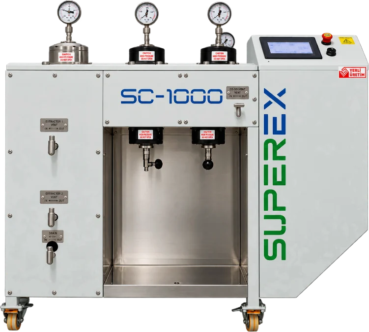

SUPEREX
SUPEREX systems are flexible solutions for supercritical CO₂ extraction (SFE), available in laboratory, pilot and industrial configurations and adaptable to a wide range of applications. Depending on the model, the systems offer extraction vessels of various volumes, operation at pressures up to 345 bar (higher in certain configurations), precise PID temperature control and automatic pressure regulation, with the option of adding a co-solvent, multiple extractors and separators, and a CO₂ recycling system. Stainless-steel construction, easy loading and cleaning, and the ability to handle both solid and liquid samples make SUPEREX well suited to research, development and production of natural extracts, aromas, oils and other valuable components, with system configuration tailored to specific process requirements.